4. Documentación de errores en la Seguridad y componentes vulnerables¶
En esta actividad se analiza la presencia de dependencias vulnerables en un proyecto Node.js utilizando la herramienta OWASP Dependency-Check.
Se muestra:
- El estado inicial del proyecto con vulnerabilidades.
- La detección de dependencias inseguras.
- La aplicación de mitigaciones.
- Evidencias mediante capturas de pantalla.
4.1 Instalación OWASP Dependency-Check y solicitud key API NVD¶
A continuación muestro la instalación de la herramienta de código abierto de OWASP que permite identificar dependencias vulnerables en un proyecto al compararlas con bases de datos de vulnerabilidades conocidas, como la National Vulnerability Database (NVD) de la cual solicitaré su API key.
Instalación OWASP Dependency-Check¶
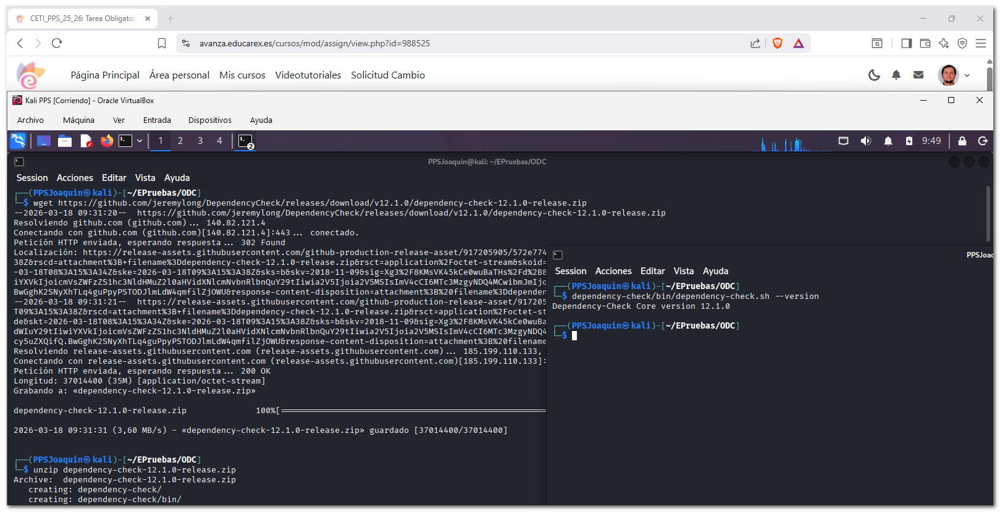
Solicitud key API NVD¶
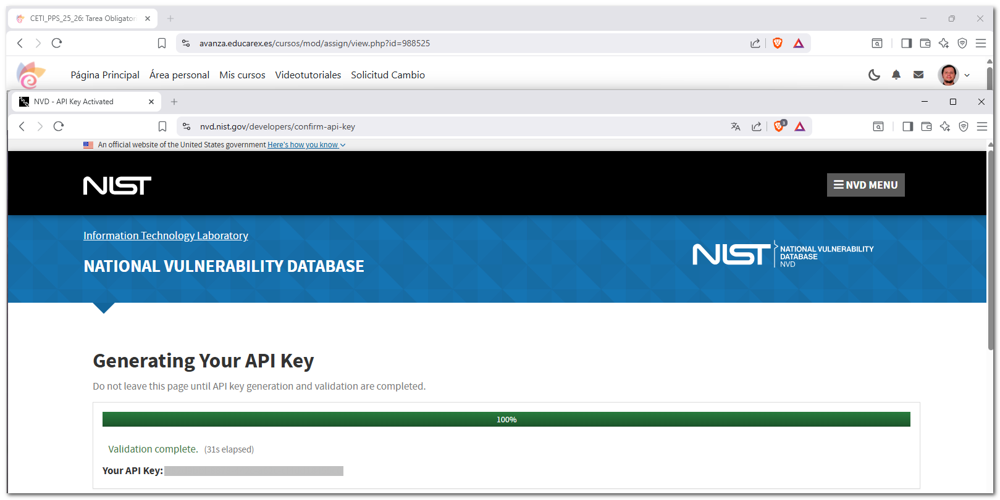
4.2 Análisis de proyecto en Node.js¶
Instalación Node.js¶
Para verificar vulnerabilidades en las dependencias de un proyecto basado en Node.js, nstalamos nodejs y npm:
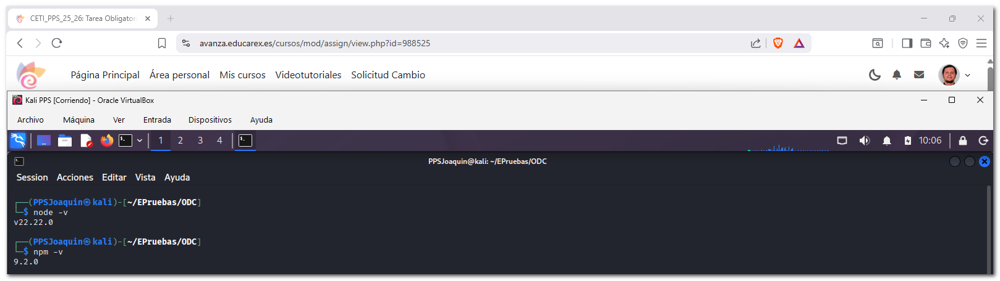
Estado inicial y vulnerabilidad¶
Se crea un proyecto en Node.js e instalo librerías con versiones conocidas por contener vulnerabilidades, se aprecia que se detectan en la instalación.
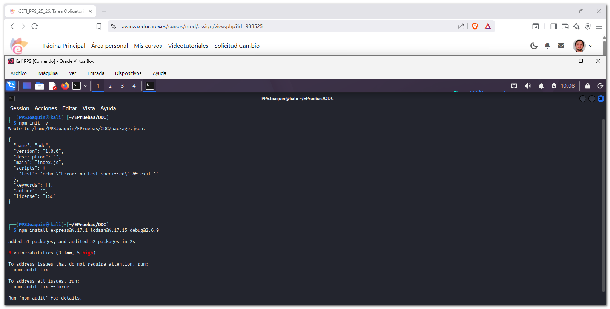
Al instalarlo crea un archivo package-lock.json con todas las dependencias que utiliza, lo modifico para que no nos aparezcan tantos resultados, lo dejo sólo con los paquetes principales:
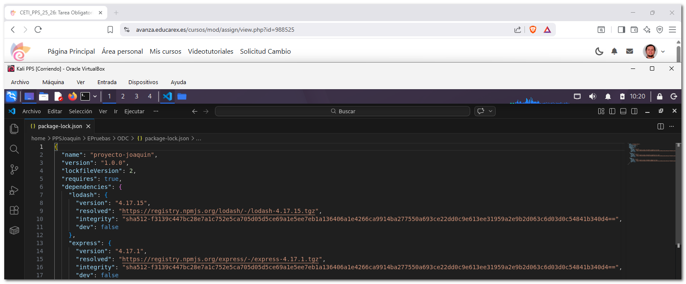
package-lock.json
{
"name": "example-project",
"version": "1.0.0",
"lockfileVersion": 2,
"requires": true,
"dependencies": {
"lodash": {
"version": "4.17.15",
"resolved": "https://registry.npmjs.org/lodash/-/lodash-4.17.15.tgz",
"integrity": "sha512-f3139c447bc28e7a1c752e5ca705d05d5ce69a1e5ee7eb1a136406a1e4266ca9914ba277550a693ce22dd0c9e613ee31959a2e9b2d063c6d03d0c54841b340d4==",
"dev": false
},
"express": {
"version": "4.17.1",
"resolved": "https://registry.npmjs.org/express/-/express-4.17.1.tgz",
"integrity": "sha512-f3139c447bc28e7a1c752e5ca705d05d5ce69a1e5ee7eb1a136406a1e4266ca9914ba277550a693ce22dd0c9e613ee31959a2e9b2d063c6d03d0c54841b340d4==",
"dev": false
},
"debug": {
"version": "2.6.9",
"resolved": "https://registry.npmjs.org/debug/-/debug-2.6.9.tgz",
"integrity": "sha512-f3139c447bc28e7a1c752e5ca705d05d5ce69a1e5ee7eb1a136406a1e4266ca9914ba277550a693ce22dd0c9e613ee31959a2e9b2d063c6d03d0c54841b340d4==",
"dev": false
}
}
}
Posteriormente ejecuto la herramienta Dependency-Check que genera el archvo dependency-check-report.html que inspeccionaré en el siguiente apartado.
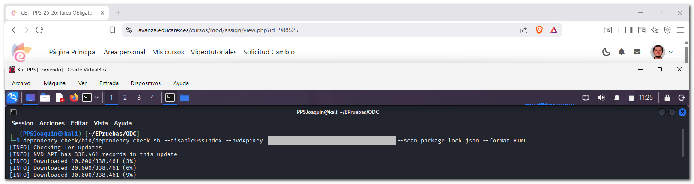
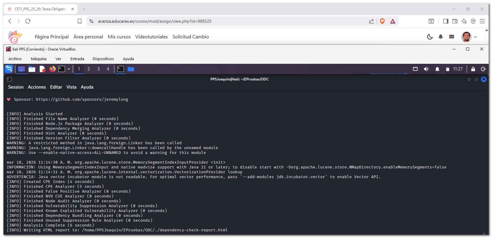
Análisis de la vulnerabilidad¶
El informe muestra múltiples dependencias con vulnerabilidades, por ejemplo:
lodash 4.17.15
- Vulnerabilidad: Prototype Pollution
- Severidad: Alta (CVSS ~7.4)
Estas vulnerabilidades pueden permitir ejecución de código no autorizado, manipulación de objetos en la aplicación y fugas de información sensible.
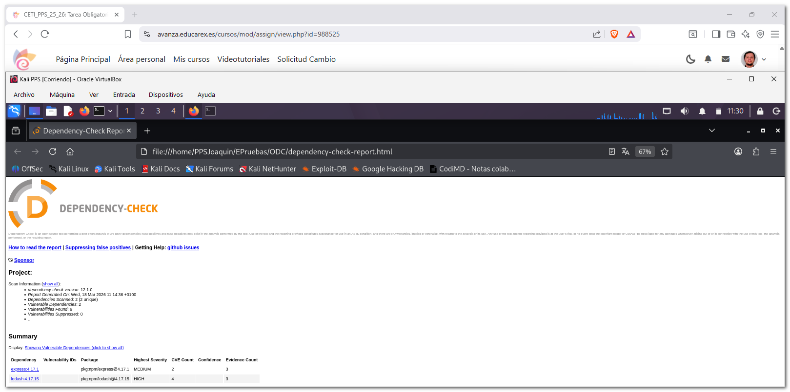
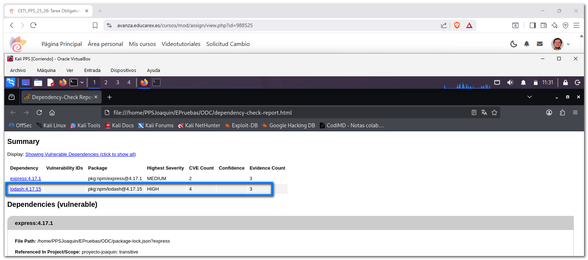
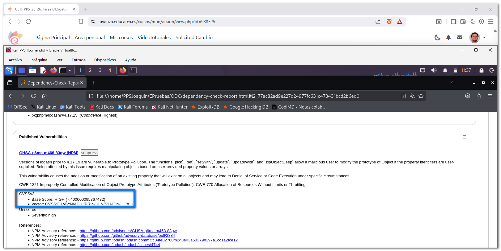
4.3 Mitigación¶
A continuación muestro las soluciones aplicadas.
Mitigación 1 - Actualización de dependencias¶
- Se actualizan todas las librerías a versiones actualizando las dependencias a sus versiones más recientes, de esta forma se eliminan vulnerabilidades conocidas presentes en versiones antiguas.
- Además, el comando
npm audit fixcorrige automáticamente problemas de seguridad detectados por npm.
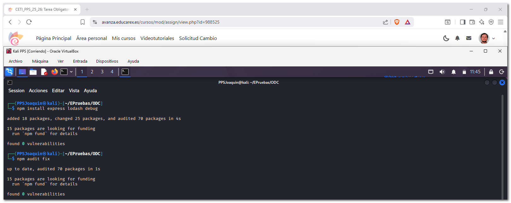
Mitigación 2 - Auditoría y verificación de seguridad¶
- Realizo una auditoría del proyecto tras la actualización con
npm audity vuelvo a ejecutar Dependency-Check para verificar:
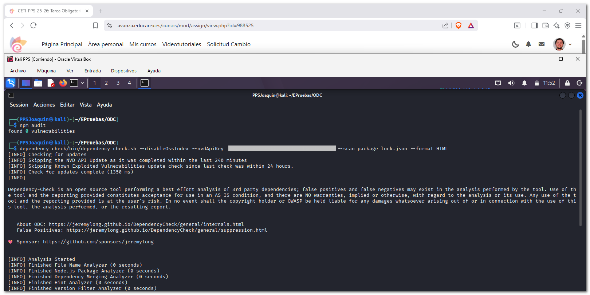
- Se verifica que las vulnerabilidades han sido mitigadas mediante herramientas de auditoría mediante el informe.
- Con esto queda demostrado que el uso de análisis continuo permite detectar dependencias inseguras antes de que lleguen a producción.
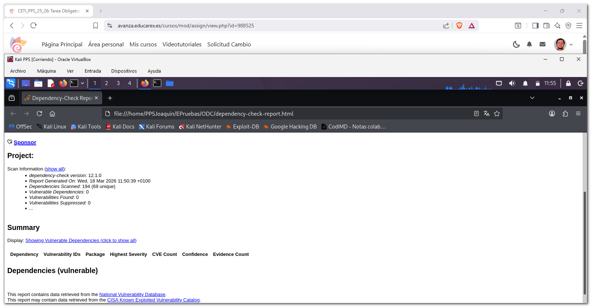